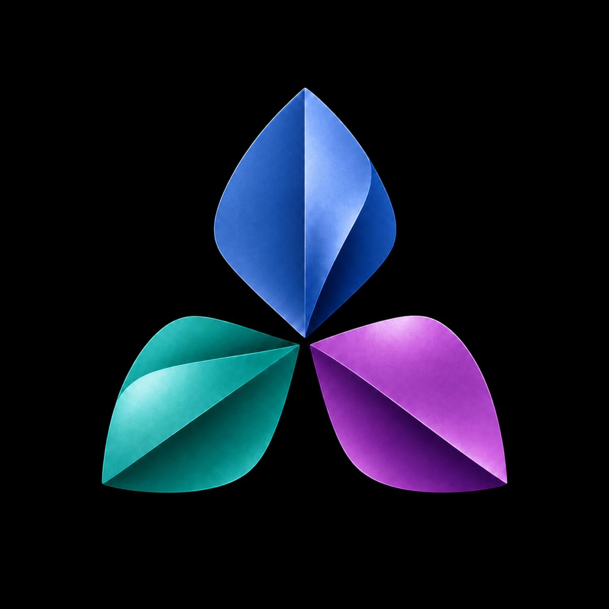

JASSI.EXE / 03 / OXALIC LAB INDIA / IST
03 / TEAMTHE PEOPLE BEHIND THE BUILDS
OXALIC
LAB.
A small team. Big ideas. A growing ecosystem.

FOUNDED BY THE TEAMBUILDING BETTER
BUILDING BETTER
DISCORD EXPERIENCES.
Oxalic Lab is a collaborative project where the team develops, tests, and improves Discord bots. Every release is a team effort — from direction and implementation to quality checks and promotion.
01 / LEAD
BALDEEP
Owner & Lead DeveloperSets the technical direction, shapes ideas, and guides development priorities.
02 / BUILDER
JASPRIT
Founder & Secondary DeveloperTurns planned ideas into working features, with a focus on Python and Discord bots.
03 / QUALITY
PRABHJOT
Founder & QA / Bug HunterTests features carefully, hunts bugs, and helps present the bots to new communities.
THE JOURNEY — IN PROGRESS
STARTTHE IDEA
A shared goal to build useful Discord bots.
GROWTHFIRST RELEASES
Music and all-in-one projects take shape.
NOWFOUR-BOT ECOSYSTEM
Building, testing, improving, and reaching more servers.
NEXTWHAT'S NEXT?
More features. Better experiences. Bigger goals.